Lectures in this section
Each lecture links to the notes that cover it. Lab bucket convention: dea-lab-<initials>-<random>, sample file data/customers.csv, prefixes raw/, staging/, curated/.
- Partitioning and folder structure in a data lake ~12:00 Slides 125–131
- Storage classes and lifecycle configuration ~18:00 Slides 132–145
- S3 versioning ~8:00 Slides 146–150
- Encryption at rest and in transit ~12:00 Slides 151–160
- Bucket policies and access evaluation ~6:00 Slides 161–162
- Access Points, Multi-Region Access Points and Object Lambda ~10:00 Slides 163–170
- S3 event notifications and EventBridge ~9:00 Slides 171–184
Partitioning and folder structure
In a data lake, the prefix layout you choose when writing to S3 is the single most important design decision. It determines how much data Athena scans per query, how cheap lifecycle rules are to apply, and whether the Glue Data Catalog stays in sync with what is actually on disk.
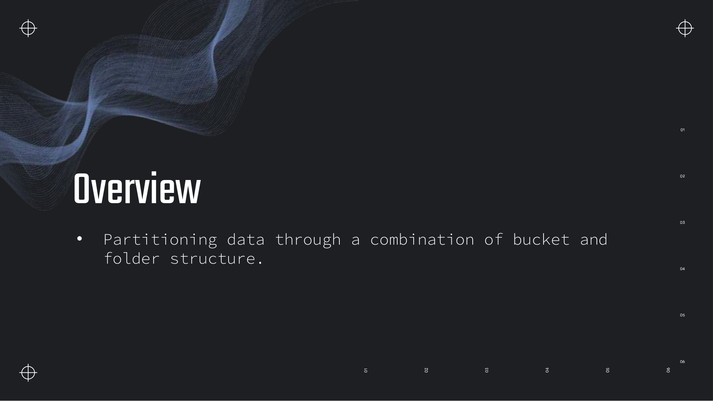
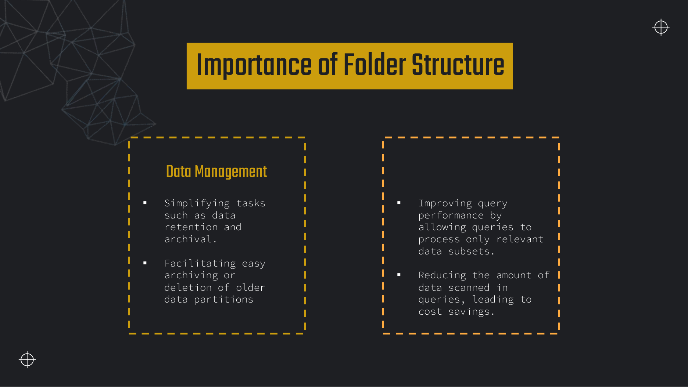
raw/year=2020/ in one rule), and query engines skip irrelevant prefixes so you scan — and pay for — less data.Why prefix layout is the lake's foundation
S3 is a flat object store. Slashes in keys are a naming convention, not filesystem directories. But every tool in the AWS analytics stack — Glue crawlers, Athena, Redshift Spectrum, EMR — interprets common prefixes as partitions when registered in the Glue Data Catalog. A query like WHERE year=2024 AND month=03 becomes a prefix filter that skips every other year and month on disk. Get this wrong and Athena bills you for scanning the entire lake on every query.
Typical lake layout: raw → staging → curated, with lifecycle transitions
Hive-style key=value partitioning
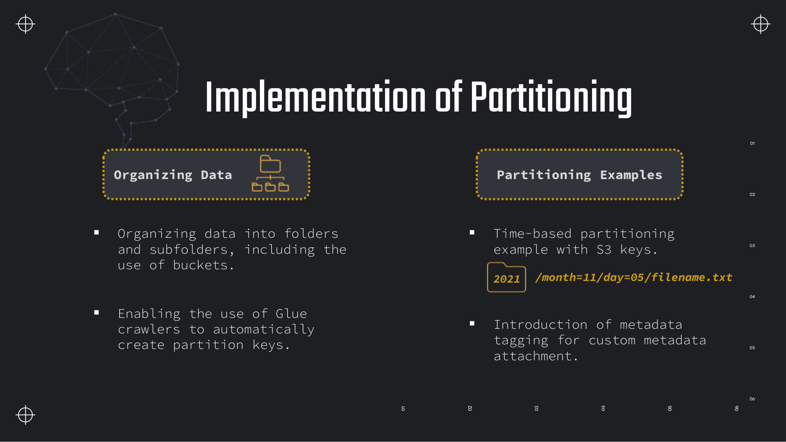
s3://bucket/table/year=2024/month=11/day=05/file.parquet. Glue crawlers infer partition columns from the key=value segments; Athena uses them for partition pruning. Object tags are a separate mechanism for metadata that does not affect query pruning.Partition columns should match your query filters, not your ingest timestamps alone. If analysts always filter by region and event_date, those are your partition keys — not ingest_hour. Time is the default because it aligns with retention ("drop data older than two years") and most dashboards filter by date range.
Choosing partition columns by query pattern
- High-cardinality keys (user id, session id) create millions of tiny prefixes — avoid them as top-level partitions unless each prefix still holds megabytes of data.
- Low-cardinality keys (region with five values, product line) are safe and effective when combined with a time column.
- Order matters: put the most selective filter first in the path if your engine supports static pruning on leading columns — for Hive/Athena, all listed partition columns are pruned equally when filtered.
Over-partitioning and the small-files problem
Each partition is a set of objects. Thousands of partitions each holding one 10 KB file is worse than one partition with one 128 MB Parquet file: Athena and Redshift Spectrum pay per request as well as per byte scanned, and the Glue Catalog groans under hundreds of thousands of partition entries. Target 128 MB–1 GB per object for analytics formats. Compact small files with a Glue job or EMR step before querying.
Keeping the Glue Catalog in step with S3
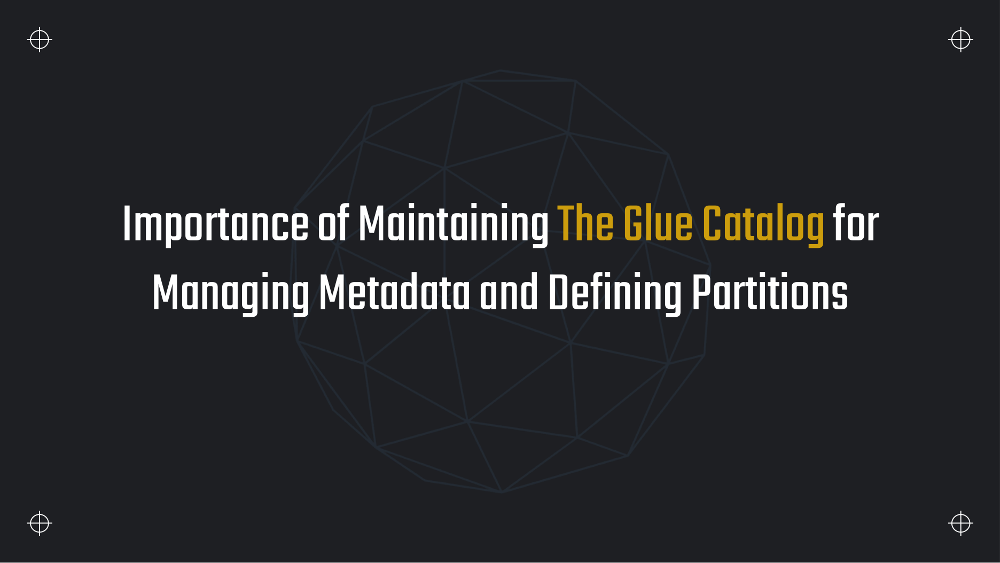
- Glue crawlers — schedule after batch loads or run on a trigger; they infer schema and register new partitions. Slow on buckets with millions of objects — scope crawlers to specific prefixes.
MSCK REPAIR TABLE— Athena/Hive command that reads partition locations from S3 and adds missing entries. Fast for Hive-style layouts; run after each batch drop or automate in a pipeline step.- Partition projection — table property that tells Athena to synthesise partition values from a template (e.g.
year=2020..2030) without listing S3 at all. Eliminates crawler/repair for predictable time ranges; wrong configuration returns empty results silently. ALTER TABLE ADD PARTITION— explicit DDL when you know the exact path; preferred in controlled pipelines over crawling.
Query patterns, partition DDL and cost maths for Athena are covered in depth in Section 3. Glue crawler configuration and table definitions are in Section 4.
-- Table already exists with PARTITIONED BY (year, month, day)
MSCK REPAIR TABLE sales_raw;
-- Or add one partition explicitly when the path is known:
ALTER TABLE sales_raw ADD IF NOT EXISTS
PARTITION (year='2026', month='08', day='03')
LOCATION 's3://dea-lab-ab-4821/staging/sales/year=2026/month=08/day=03/';ALTER TABLE events SET TBLPROPERTIES (
'projection.enabled' = 'true',
'projection.year.type' = 'integer',
'projection.year.range' = '2020,2030',
'projection.month.type' = 'integer',
'projection.month.range' = '1,12',
'projection.month.digits' = '2',
'projection.day.type' = 'integer',
'projection.day.range' = '1,31',
'projection.day.digits' = '2',
'storage.location.template' =
's3://dea-lab-ab-4821/staging/events/year=${year}/month=${month}/day=${day}/'
);Object size limits worth knowing
| Limit | Value | What to do instead |
|---|---|---|
| Maximum object size | 5 TB | Split logically; use multipart upload for anything over 5 GB. |
| Single PUT upload | 5 GB max | Multipart upload required above 5 GB; recommended above 100 MB for reliability. |
| Multipart upload | Up to 5 TB, 10,000 parts × 5 GB each | Abort incomplete multipart uploads via lifecycle rule to avoid orphan-part charges. |
Storage classes and lifecycle
S3 storage classes trade cost against availability, retrieval latency and minimum retention. Pick the class at write time or let Intelligent-Tiering or lifecycle rules move objects automatically as they age.
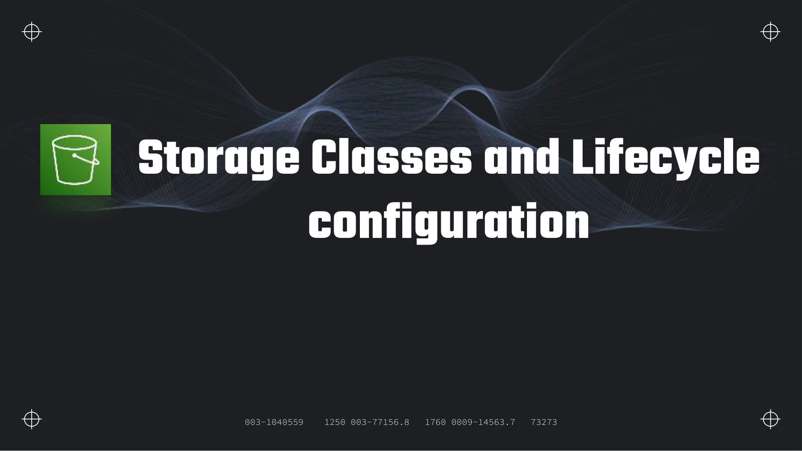
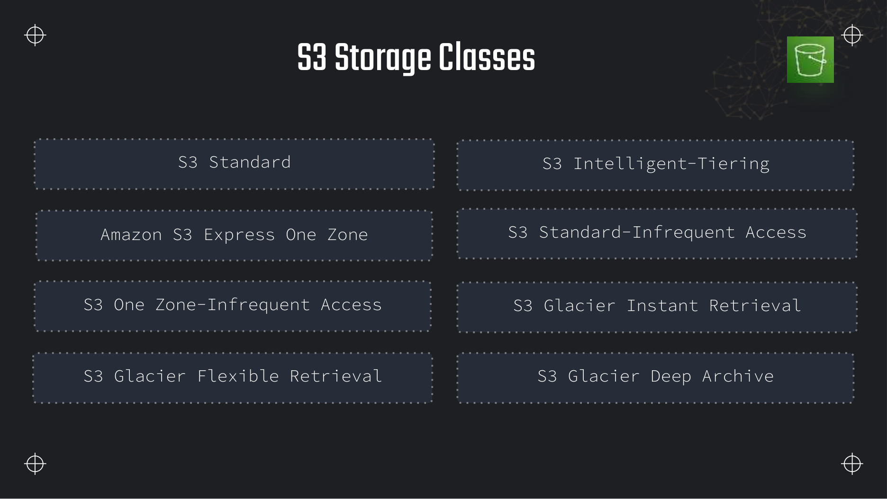
Storage class comparison
| Storage class | Durability | Availability | AZs | Min storage duration | Min billable object size | Retrieval fee | Retrieval time | Typical use case |
|---|---|---|---|---|---|---|---|---|
| S3 Standard | 99.999999999% (11 9s) | 99.99% | ≥ 3 | None | None | None | Milliseconds | Frequently accessed data: active lake zones, serving layers, ETL working sets |
| S3 Intelligent-Tiering | 11 9s | 99.9% | ≥ 3 | 30 days in Archive Access / Deep Archive Access tiers | 128 KB (monitoring fee below this) | None for tier moves; retrieval fee in archive tiers | Milliseconds (Frequent/Infrequent); hours for archive tiers | Unknown or changing access patterns — no retrieval fee for auto-tiering |
| S3 Express One Zone | 11 9s | 99.95% | 1 (directory bucket) | None | None | None | Single-digit ms; ~10× faster than Standard | Latency-sensitive analytics on repeatedly accessed data in one AZ; ~50% lower request cost |
| S3 Standard-IA | 11 9s | 99.9% | ≥ 3 | 30 days | 128 KB | Per GB retrieved | Milliseconds | Backups, disaster-recovery copies accessed monthly or less but needing rapid access when needed |
| S3 One Zone-IA | 11 9s | 99.5% | 1 | 30 days | 128 KB | Per GB retrieved | Milliseconds | Secondary backup copies of on-premises data you can recreate elsewhere |
| S3 Glacier Instant Retrieval | 11 9s | 99.9% | ≥ 3 | 90 days | 128 KB | Per GB retrieved | Milliseconds | Archive that still needs immediate read access — medical images, news archives |
| S3 Glacier Flexible Retrieval | 11 9s | 99.99% | ≥ 3 | 90 days | 40 KB (parts) | Per GB; tier-dependent | Expedited 1–5 min · Standard 3–5 hr · Bulk 5–12 hr (bulk free) | Backups accessed 1–2× per year; async restore acceptable |
| S3 Glacier Deep Archive | 11 9s | 99.99% | ≥ 3 | 180 days | 40 KB (parts) | Per GB | Standard 12 hr · Bulk 48 hr | Cheapest long-term retention; data accessed once or twice a year at most |
| Reduced Redundancy legacy | 99.99% (4 9s) | 99.99% | ≥ 3 | None | None | None | Milliseconds | Deprecated — only for reproducible, non-critical data on existing buckets; never for a lake |
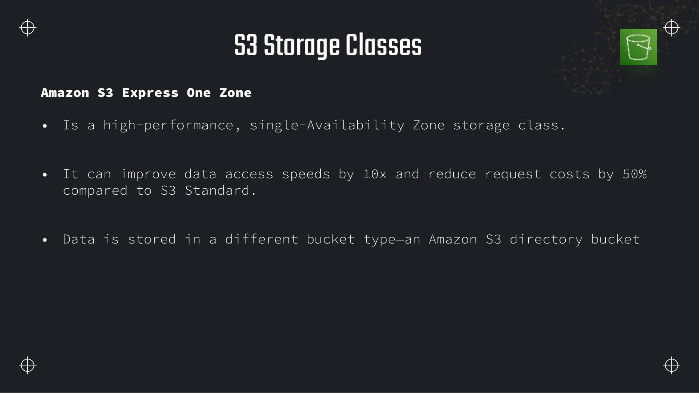
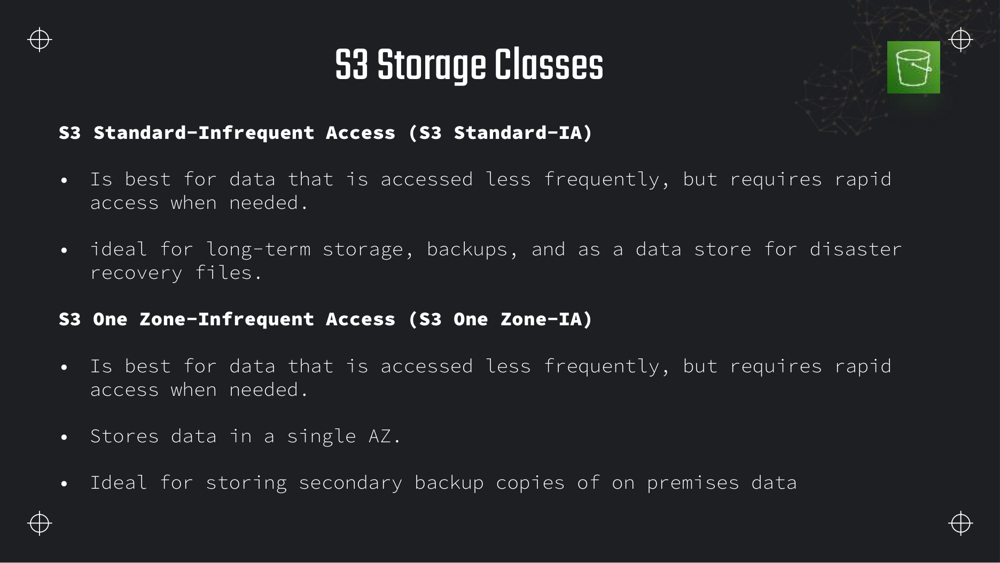
Lifecycle configuration
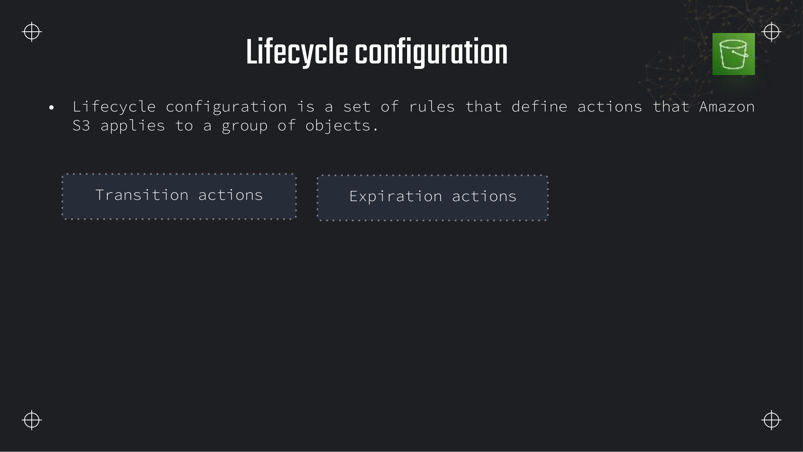
- Transition actions — move current objects to a cheaper class after N days. Cannot transition back to Standard from Glacier without a restore and re-upload.
- Expiration actions — permanently delete current objects after N days.
- Noncurrent version transitions/expirations — apply to older versions when versioning is on; essential for controlling version-storage costs.
- Abort incomplete multipart uploads — delete orphan parts after N days; always set this to 7 days on ingest buckets.
- Filters — scope rules by prefix (
raw/), object tags (team=finance), or minimum/maximum object size.
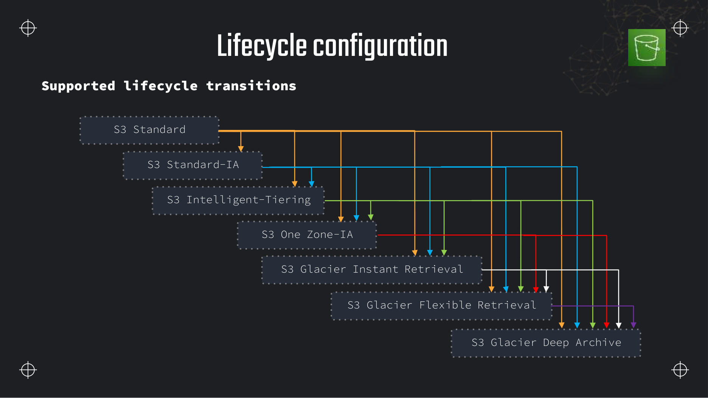
{
"Rules": [
{
"ID": "raw-to-glacier-then-expire",
"Status": "Enabled",
"Filter": { "Prefix": "raw/" },
"Transitions": [
{ "Days": 90, "StorageClass": "GLACIER" }
],
"Expiration": { "Days": 365 }
},
{
"ID": "abort-incomplete-multipart",
"Status": "Enabled",
"Filter": { "Prefix": "" },
"AbortIncompleteMultipartUpload": { "DaysAfterInitiation": 7 }
},
{
"ID": "expire-noncurrent-versions",
"Status": "Enabled",
"Filter": { "Prefix": "curated/" },
"NoncurrentVersionTransitions": [
{ "NoncurrentDays": 30, "StorageClass": "STANDARD_IA" }
],
"NoncurrentVersionExpiration": { "NoncurrentDays": 90 }
}
]
}BUCKET=dea-lab-ab-4821
aws s3api put-bucket-lifecycle-configuration \
--bucket $BUCKET \
--lifecycle-configuration file://lifecycle.json
aws s3api get-bucket-lifecycle-configuration --bucket $BUCKETS3 Replication (CRR and SRR)
Replication copies objects — and optionally metadata, tags and ACLs — to a bucket in another Region (CRR) or the same Region (SRR). Requires versioning on both buckets. Use cases: lower-latency reads in another Region, compliance copies, and aggregating logs from multiple buckets into one.
| Feature | CRR (cross-Region) | SRR (same-Region) |
|---|---|---|
| Destination | Bucket in a different AWS Region | Bucket in the same Region (different account or isolation boundary) |
| Primary use | Disaster recovery, global read latency, compliance residency copy | Log aggregation, separating prod/test copies, same-Region redundancy |
| Versioning required | Yes, on source and destination | Yes, on source and destination |
| RTC available | Yes — 15-minute SLA | Yes — 15-minute SLA |
| Transfer cost | Inter-Region data transfer per GB | No inter-Region charge; storage in both buckets |
- Replication Time Control (RTC) — guarantees 99.99% of objects replicate within 15 minutes; extra charge per GB.
- Replica modification sync — keeps metadata changes on the replica in sync when the source is updated (requires RTC).
- Replication metrics — CloudWatch tracks bytes pending, operations failed and latency; alarm on a growing pending-replication backlog.
- What IS replicated: new objects after rule activation, metadata, tags, ACLs (if configured), object lock retention (if enabled on both buckets).
- What is NOT replicated: objects that existed before replication was enabled (unless you run a batch replication job), objects in lifecycle transition, objects encrypted with SSE-C, delete markers unless configured, and objects in Glacier or Deep Archive unless restored first.
- Two-way replication — bidirectional rules for active/active setups; watch for replication loops with delete markers.
Auditing lake storage: Storage Lens and Inventory
S3 Storage Lens gives account- and bucket-level dashboards: storage by class, incomplete multipart uploads, encryption status, and activity metrics. Free metrics cover the last 14 days at account level; advanced metrics add activity by prefix, cost optimisation recommendations and 15 months of retention. S3 Inventory delivers CSV/ORC/Parquet manifests of every object on a daily or weekly schedule — feed it to Athena to find unencrypted objects, stale prefixes or cost outliers. Both are exam answers for "how do you audit storage across hundreds of buckets".
SELECT bucket, key, size, storage_class, encryption_status
FROM inventory_reports
WHERE encryption_status = 'NOT-SSE'
OR encryption_status IS NULL
ORDER BY size DESC
LIMIT 100;Versioning
Versioning keeps every overwrite and delete as a recoverable history. It is essential for replication, Object Lock and accidental-delete protection — but every retained version is billed at the storage class rate.
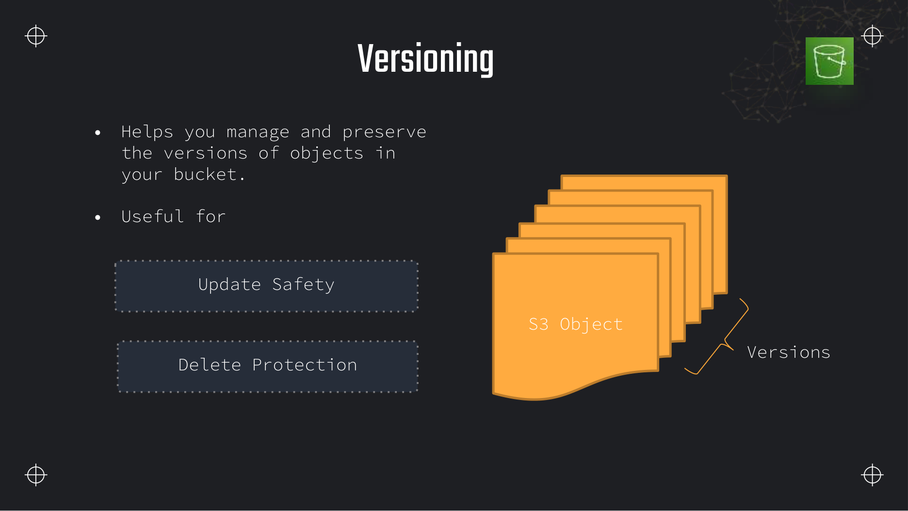
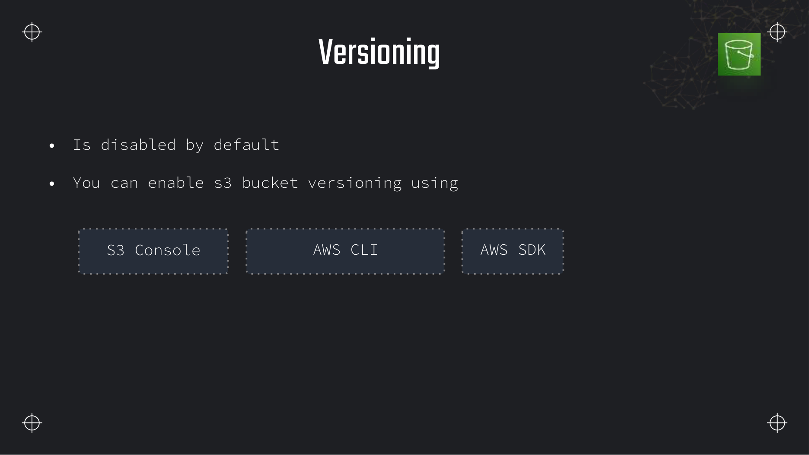
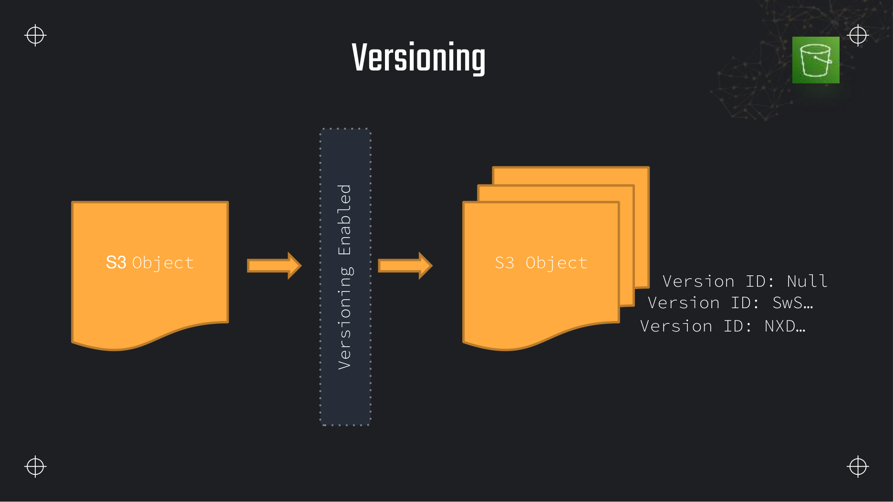
null version ID. After enable, every PUT creates a new version with a unique opaque ID.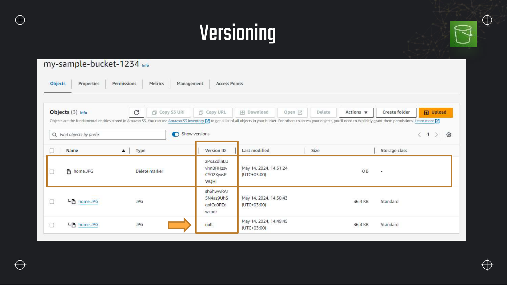
DeleteObject + VersionId.Enable, suspend and MFA Delete
- Enabled — every PUT writes a new version; DELETE adds a delete marker.
- Suspended — no new versions; overwrites replace the null version; deletes remove the null version permanently.
- MFA Delete — requires MFA to change versioning state or permanently delete a version. Can only be enabled by the root user via CLI/API, not the console. Exam favourite for compliance scenarios.
Cost and lifecycle for noncurrent versions
Every retained version is a full object billed at its storage class. A daily overwrite of a 1 GB file keeps 365 GB after a year unless lifecycle rules expire noncurrent versions. Use NoncurrentVersionExpiration and NoncurrentVersionTransitions on curated prefixes — keep three noncurrent versions or 30 days, whichever comes first.
aws s3api list-object-versions \
--bucket dea-lab-ab-4821 \
--prefix curated/customers/customers.csv \
--output tableS3 Object Lock and legal holds
Object Lock enforces WORM (write once, read many) on a versioned bucket. Governance mode lets privileged users override; Compliance mode prevents anyone, including root, from deleting until retention expires. A legal hold blocks deletion indefinitely until explicitly removed. Required for SEC 17a-4 and similar regulations. Object Lock must be enabled at bucket creation; it cannot be added later.
Encryption
S3 encrypts data at rest by default and supports four server-side modes plus client-side encryption. The exam tests which mode gives you audit trails, key control and policy enforcement — not the cryptography itself.
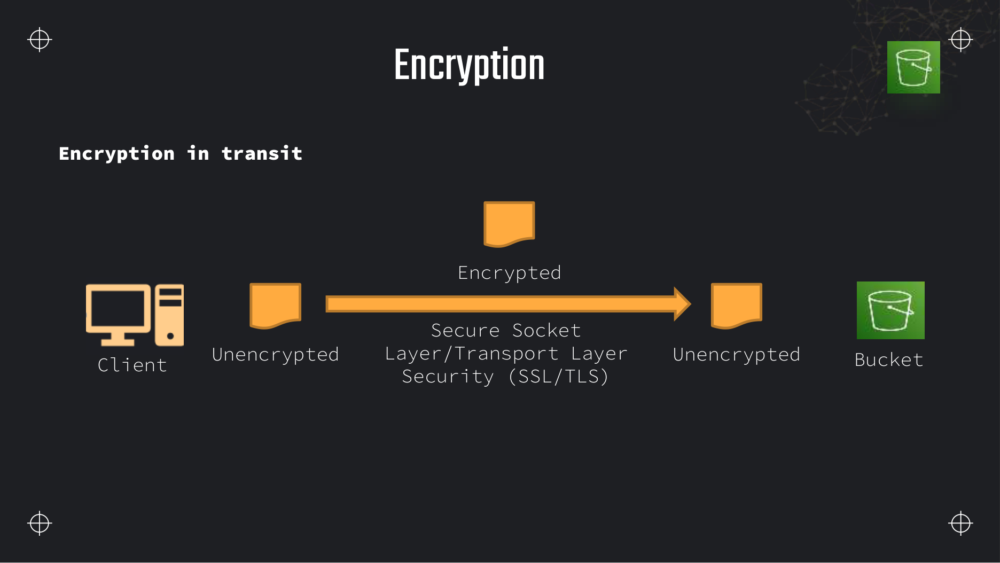
aws:SecureTransport = true.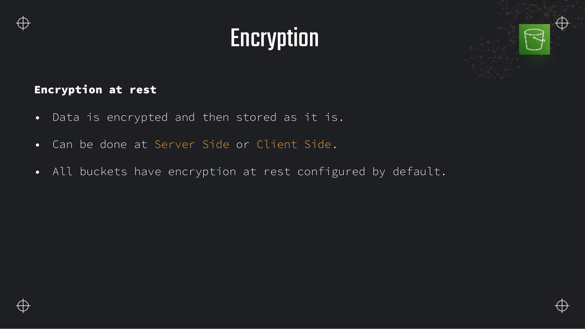
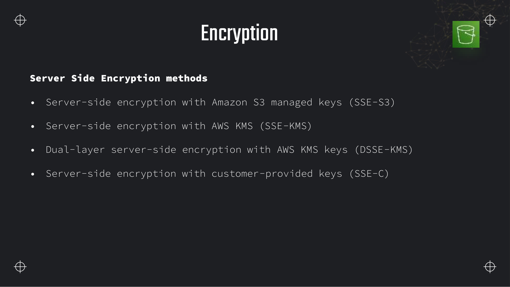
Encryption mode comparison
| Mode | Key holder | Who encrypts | Request headers / SDK params | KMS API cost | KMS throttling risk | S3 Bucket Key |
|---|---|---|---|---|---|---|
| SSE-S3 | AWS (S3-managed) | S3 | x-amz-server-side-encryption: AES256 (or default) |
None | None | N/A |
| SSE-KMS | AWS KMS (customer-managed or aws/s3) | S3 calls KMS | aws:kms + x-amz-server-side-encryption-aws-kms-key-id |
~$0.03 per 10,000 requests | Yes — hot buckets can hit KMS TPS limits | Yes — reduces KMS calls ~99% |
| DSSE-KMS | AWS KMS (two independent layers) | S3 calls KMS twice | aws:kms:dsse + KMS key ID |
Double KMS requests per object | Higher than SSE-KMS | Yes |
| SSE-C | Customer (you generate and store keys) | S3 with key you send per request | x-amz-server-side-encryption-customer-algorithm, -customer-key, -customer-key-MD5 |
None | None | No |
| CSE | Customer | Client SDK before upload | Client-side — S3 sees only ciphertext | None (unless you use KMS on client) | None on S3 path | No |
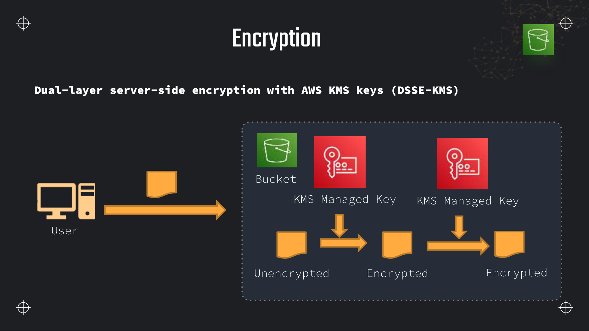
S3 Bucket Keys
With SSE-KMS, every object upload and download can call KMS — expensive and throttle-prone at scale. A S3 Bucket Key uses a bucket-level key that S3 rotates automatically, reducing KMS API calls by up to 99%. Enable in default encryption settings. CloudTrail still logs via S3 rather than per-object KMS events.
Policy enforcement: TLS and encryption headers
Combine bucket default encryption with a deny policy so non-compliant uploads fail rather than relying on defaults alone:
aws:SecureTransport = false→ deny (blocks HTTP).s3:x-amz-server-side-encryptionnotAES256oraws:kms→ deny unencrypted uploads.s3:x-amz-server-side-encryption-aws-kms-key-id→ restrict to a specific CMK ARN.
aws s3api put-bucket-encryption \
--bucket dea-lab-ab-4821 \
--server-side-encryption-configuration '{
"Rules": [{
"ApplyServerSideEncryptionByDefault": {
"SSEAlgorithm": "aws:kms",
"KMSMasterKeyID": "arn:aws:kms:us-east-1:123456789012:key/abcd-1234"
},
"BucketKeyEnabled": true
}]
}'Bucket policies
A bucket policy is a resource-based IAM policy attached to the bucket. It controls who can reach the bucket from outside your account, enforces encryption and TLS, and complements identity-based IAM policies and ACLs.
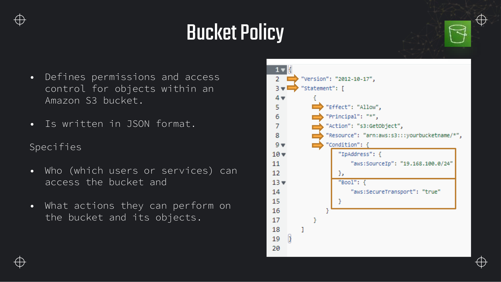
How policies combine: evaluation order
- Explicit deny in any applicable policy (bucket, IAM, SCP, session policy) → request denied. Deny always wins.
- Explicit allow in bucket policy or IAM policy → allowed if no deny matched.
- Implicit deny → default if nothing allows the action.
IAM identity policies grant users/roles permission to act. Bucket policies grant the bucket permission to be acted upon by specified principals — essential for cross-account access and public reads. ACLs are legacy; new designs use bucket policies and Block Public Access.
Block Public Access
Four account- and bucket-level switches that override any policy attempting public access. Turn them on at account level for data-lake accounts. Exam scenario: "bucket policy grants public read but objects are inaccessible" → Block Public Access is on.
Worked examples
{
"Version": "2012-10-17",
"Statement": [
{
"Sid": "DenyInsecureTransport",
"Effect": "Deny",
"Principal": "*",
"Action": "s3:*",
"Resource": [
"arn:aws:s3:::dea-lab-ab-4821",
"arn:aws:s3:::dea-lab-ab-4821/*"
],
"Condition": {
"Bool": { "aws:SecureTransport": "false" }
}
},
{
"Sid": "DenyUnencryptedUploads",
"Effect": "Deny",
"Principal": "*",
"Action": ["s3:PutObject", "s3:PostObject"],
"Resource": "arn:aws:s3:::dea-lab-ab-4821/*",
"Condition": {
"StringNotEquals": {
"s3:x-amz-server-side-encryption": ["AES256", "aws:kms"]
}
}
}
]
}{
"Version": "2012-10-17",
"Statement": [{
"Sid": "RestrictToVPCE",
"Effect": "Deny",
"Principal": "*",
"Action": "s3:*",
"Resource": "arn:aws:s3:::dea-lab-ab-4821/*",
"Condition": {
"StringNotEquals": {
"aws:SourceVpce": "vpce-0abc1234def567890"
}
}
}]
}{
"Version": "2012-10-17",
"Statement": [{
"Sid": "AllowCrossAccountCuratedRead",
"Effect": "Allow",
"Principal": { "AWS": "arn:aws:iam::999888777666:role/DataConsumer" },
"Action": ["s3:GetObject", "s3:ListBucket"],
"Resource": [
"arn:aws:s3:::dea-lab-ab-4821",
"arn:aws:s3:::dea-lab-ab-4821/curated/*"
]
}]
}Other access controls
- Requester Pays — the downloader pays request and data-transfer costs instead of the bucket owner. Enable on shared datasets; callers must include
x-amz-request-payer: requester. - Transfer Acceleration — uploads route through CloudFront edge locations to the bucket Region over optimised paths. Costs extra; use for global uploads to a single Region, not for intra-Region traffic.
Access Points and Object Lambda
When one bucket serves many applications with different permissions, a single bucket policy becomes unmaintainable. S3 Access Points give each application its own hostname and policy. Object Lambda transforms objects on GET without storing a second copy.
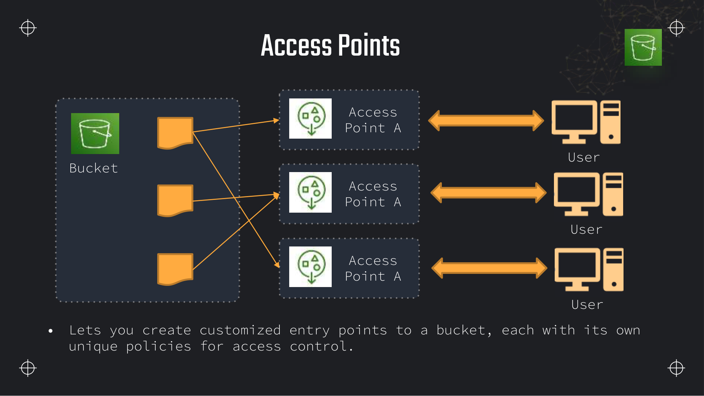
arn:aws:s3:us-east-1:123:accesspoint/ap-a and sees only the prefixes you allow — without editing the bucket policy for every new consumer.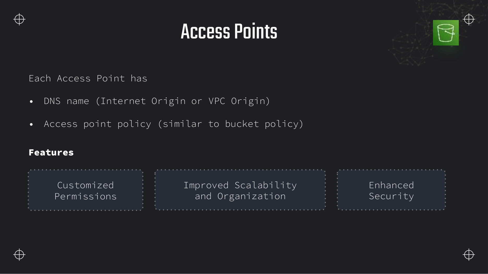
Multi-Region Access Points
MRAP provides a single global endpoint that routes requests to buckets in multiple Regions. Failover is automatic when you enable cross-Region replication behind the MRAP. Use for global applications that need low-latency reads from the nearest copy without client-side Region logic.
Object Lambda
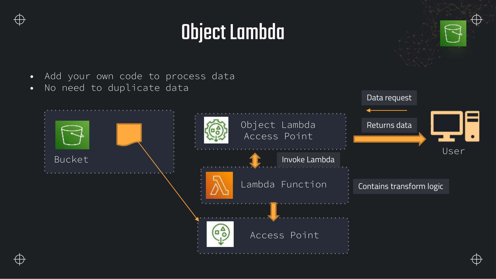
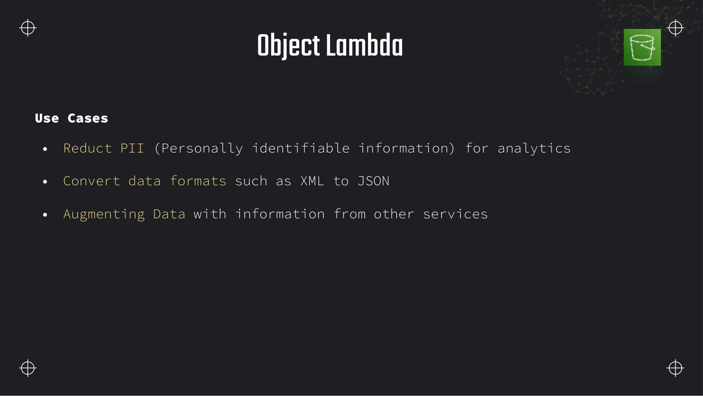
Access Point policy example
{
"Version": "2012-10-17",
"Statement": [{
"Effect": "Allow",
"Principal": { "AWS": "arn:aws:iam::123456789012:role/AnalyticsReader" },
"Action": ["s3:GetObject", "s3:ListBucket"],
"Resource": [
"arn:aws:s3:us-east-1:123456789012:accesspoint/dea-curated-ap/object/curated/*",
"arn:aws:s3:us-east-1:123456789012:accesspoint/dea-curated-ap"
]
}]
}Event notifications
S3 can notify downstream systems when objects are created, removed, restored or transitioned. Direct notifications go to SNS, SQS or Lambda; EventBridge adds richer filtering, more targets and replay.
The deck covers event notifications twice (slides 172–177 and again as 179–184 with identical content). It is listed once here.
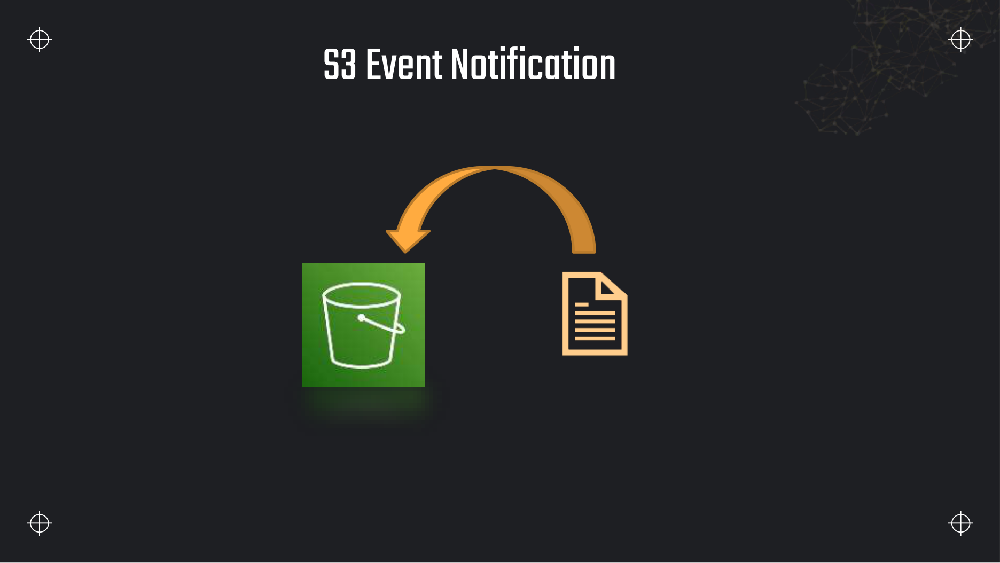
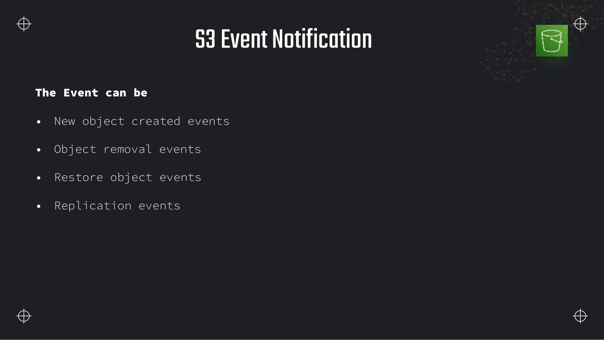
s3:ObjectCreated:*, s3:ObjectRemoved:*, s3:ObjectRestore:*, and replication events. Lifecycle and tagging events are on the next slide.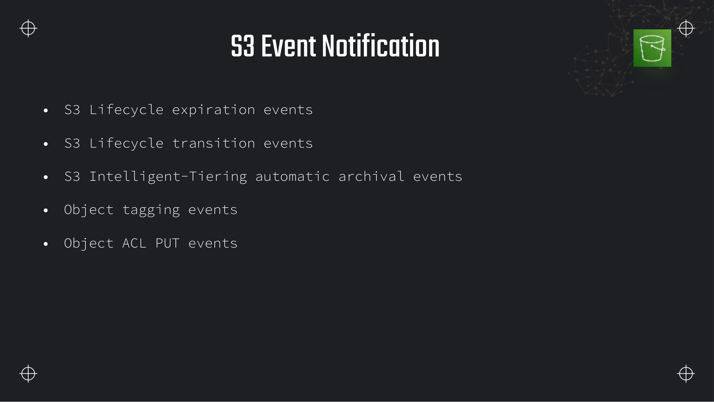
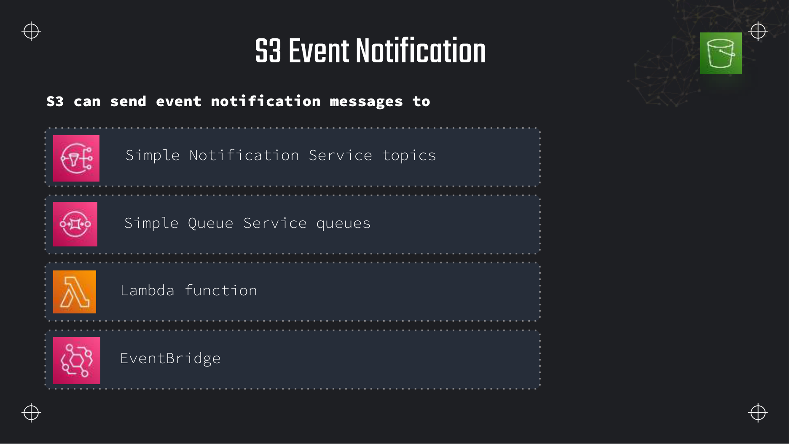
Event notification fan-out from one bucket upload
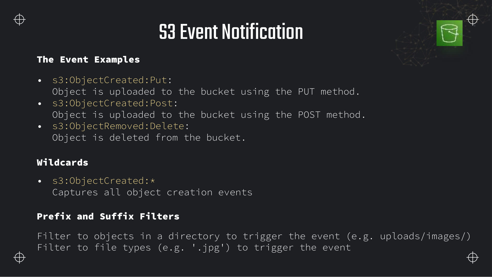
s3:ObjectCreated:*) but prefix/suffix filters are literal — there is no glob beyond matching a fixed prefix like raw/ or suffix like .csv.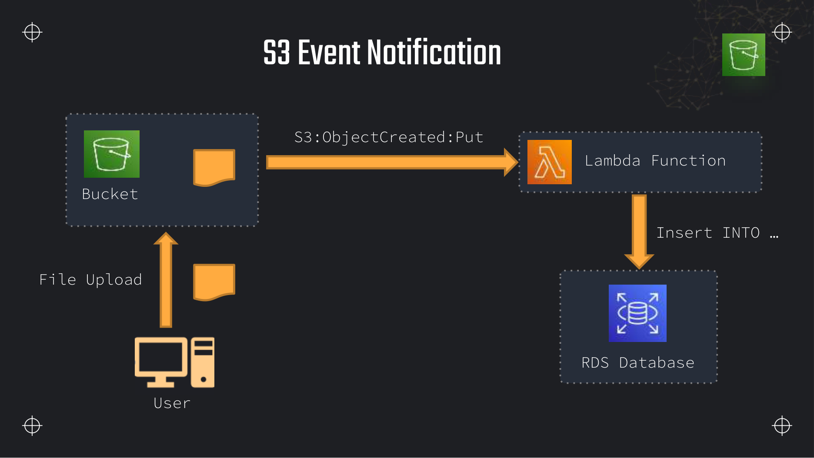
Configuration requirements
- Resource-based policy on destination — SNS topic, SQS queue and Lambda function each need a policy allowing
s3.amazonaws.comto publish/invoke, scoped to the bucket ARN. - At-least-once delivery — duplicate events are normal. Make consumers idempotent: use the object ETag or version ID as a dedup key.
- Same-Region — bucket and SNS/SQS/Lambda destination must be in the same Region (EventBridge can cross Regions with a rule).
- No wildcard prefixes — filter on prefix
raw/customers/or suffix.csv; you cannot do*.csvacross arbitrary paths in one rule (use EventBridge content filtering for richer patterns).
Why EventBridge is the richer option
- More event types including lifecycle and Intelligent-Tiering transitions.
- 20+ targets: Step Functions, Kinesis, ECS, cross-account buses, API destinations.
- Content-based filtering on event fields without re-publishing from Lambda.
- Archive and replay — rebuild downstream state after an outage.
{
"QueueConfigurations": [{
"Id": "raw-upload-to-sqs",
"QueueArn": "arn:aws:sqs:us-east-1:123456789012:dea-lab-ingest-queue",
"Events": ["s3:ObjectCreated:Put"],
"Filter": {
"Key": {
"FilterRules": [
{ "Name": "prefix", "Value": "raw/" },
{ "Name": "suffix", "Value": ".csv" }
]
}
}
}]
}{
"Records": [{
"eventVersion": "2.1",
"eventSource": "aws:s3",
"awsRegion": "us-east-1",
"eventTime": "2026-08-03T12:34:56.000Z",
"eventName": "ObjectCreated:Put",
"s3": {
"bucket": {
"name": "dea-lab-ab-4821",
"arn": "arn:aws:s3:::dea-lab-ab-4821"
},
"object": {
"key": "raw/customers/customers.csv",
"size": 818,
"eTag": "d41d8cd98f00b204e9800998ecf8427e"
}
}
}]
}Deeper detail and exam edge cases
Request-rate scaling, minimum billable sizes, transition economics, and consistency rules — the S3 operational facts that turn a cheap lake design into a throttled or over-billed one.
Limits and quotas that decide answers
| Limit | Value | Adjustable? | Why it matters |
|---|---|---|---|
| Request rate per prefix | 3,500 PUT/COPY/POST/DELETE and 5,500 GET/HEAD per second | Yes — spread keys across prefixes; S3 scales automatically | Hot prefix throttles with HTTP 503; randomise suffixes in key names for high-parallel ingest. |
| Maximum object size | 5 TB | No (hard) | Logical split required above practical single-object limits. |
| Single PUT upload | 5 GB max | No (hard) — use multipart above 5 GB | Exam scenarios with 10 GB objects require multipart upload API. |
| Multipart upload | Up to 10,000 parts; 5 MB minimum part size (last part excepted); max 5 GB per part | No (hard) | Abort incomplete uploads via lifecycle — orphan parts bill silently. |
| Buckets per account (default) | 100 soft limit; up to 1,000 via quota increase | Yes — Service Quotas request | Multi-tenant lakes sometimes hit this before storage limits. |
| Lifecycle rules per bucket | 1,000 | No (hard) | Consolidate rules with prefix patterns and tags instead of one rule per folder. |
| Minimum storage duration — Standard-IA / One Zone-IA | 30 days | No (hard) — billed even if deleted early | Early delete triggers pro-rated charge for remaining days. |
| Minimum storage duration — Glacier Instant / Flexible | 90 days | No (hard) | Transitioning small objects before 90 days often costs more than staying in Standard. |
| Minimum storage duration — Glacier Deep Archive | 180 days | No (hard) | Compliance archive only — retrieval takes up to 48 hours. |
| Minimum billable object size — IA / Intelligent-Tiering | 128 KB | No (hard) | Smaller objects are charged as 128 KB — lifecycle transition of tiny files is uneconomic. |
| Intelligent-Tiering monitoring | Per-object fee for objects ≥ 128 KB | No (hard) | Skip Intelligent-Tiering for millions of sub-128 KB objects. |
| Versioning + delete marker | Each version is a full object | N/A — design choice | Overwrites double storage until noncurrent expiration rules run. |
| Replication scope | New objects after rule activation only (unless batch replication job) | N/A — requires versioning on source and destination | Pre-existing backlog is not retroactively replicated. |
| Object Lock Compliance mode | Retention cannot be shortened; mode cannot be reverted to Governance | No (hard) — bucket must enable Object Lock at creation | WORM for regulated data; mistakes lock objects until retention expires. |
| Consistency — object operations | Read-after-write strong for new objects; overwrite PUT/DELETE eventually consistent historically — now strong for all object operations | N/A | Bucket-level configuration (policy, lifecycle) remains eventually consistent — exam still tests the distinction. |
What you actually pay for
| Billed dimension | Unit | How to spend less |
|---|---|---|
| Storage (per class) | GB-month by storage class | Lifecycle to IA/Glacier only when minimum duration and object size justify it; avoid IA for sub-128 KB objects. |
| PUT / POST / LIST / transition requests | Per 1,000 requests | Lifecycle transition of millions of small objects costs more in request fees than storage saved — batch or aggregate first. |
| GET / SELECT requests | Per 1,000 requests | CloudFront or S3 Express One Zone for hot small-object read patterns; fewer LIST calls in pipelines. |
| Intelligent-Tiering monitoring | Per 1,000 objects per month (objects ≥ 128 KB) | Use fixed lifecycle rules when access pattern is known; Intelligent-Tiering when unpredictable. |
| Retrieval — Standard-IA / One Zone-IA | Per GB retrieved | Do not query IA objects like Standard — Athena over IA curated data adds retrieval line item. |
| Glacier Flexible retrieval tiers | Expedited (1–5 min), Standard (3–5 hr), Bulk (5–12 hr, free tier of retrievals) | Plan restore jobs with Bulk for large rehydrates; Expedited for urgent single-object restores. |
| Glacier Deep Archive retrieval | Standard (~12 hr) or Bulk (~48 hr) | Lowest storage cost; highest retrieval latency — wrong class if dashboards read daily. |
| Cross-Region replication / transfer | Replication PUT charges plus inter-Region data transfer per GB | Replicate only required prefixes; SRR instead of CRR when compliance allows same-Region copy. |
| SSE-KMS without Bucket Key | KMS API request per object operation | Enable S3 Bucket Key on SSE-KMS buckets — up to 99% fewer KMS calls. |
| Storage Lens advanced | Per million objects monitored per month | Free tier covers account-level metrics; enable advanced only on buckets needing prefix-level activity metrics. |
| S3 Inventory reports | Per million objects listed per report | Weekly inventory on large buckets is cheaper than daily LIST in custom scripts at scale. |
| Requester Pays | Downloader pays GET and data transfer | Enable on public datasets so bucket owner is not charged for external scrapers. |
Traps that catch people
- Hot prefix throttling — All workers writing to
output/part-00000.parquetshare one prefix limit (3,500 PUT/s). Use hive partitions or random salt prefixes (year=…/shard=…/) so S3 scales horizontally. - Versioning doubles storage silently — Daily overwrite of a 1 GB object without noncurrent expiration retains every version. Delete markers hide objects from LIST but versions still bill.
- Replication is not retroactive — Enabling CRR today does not copy yesterday's backlog unless you run S3 Batch Replication. Exam distractors propose replication for existing archive — wrong without batch job.
- Object Lock bucket creation only — Object Lock and Compliance mode cannot be enabled on an existing bucket. Plan WORM before the first PUT.
- Compliance mode is irreversible — Once set, you cannot downgrade to Governance or delete locked objects until retention expires — even root cannot override.
- Presigned URL inherits creator permissions — The URL works only while the signer had
s3:GetObject(or Put) and the credentials remain valid. Revoking the IAM user invalidates URLs they signed. - Bucket-level vs object-level consistency — New object GETs are strongly consistent. Creating a bucket then immediately listing it may not show the bucket — configuration changes propagate eventually.
- SSE-C and replication — Customer-provided keys are incompatible with replication and default Inventory — exam questions pairing SSE-C with CRR have no valid configuration.
- Glacier Instant vs Flexible — Both have 90-day minimum; Instant allows millisecond retrieval at higher storage rate. Flexible is cheaper storage but minutes-to-hours restore — wrong pick for interactive dashboards.
- Requester Pays forgotten header — Downloaders receive 403 until they send
x-amz-request-payer: requester— common break when sharing public research datasets.
Troubleshooting playbook
| Symptom | Most likely cause | What to check / fix |
|---|---|---|
| HTTP 503 Slow Down on PUT/GET | Request rate exceeded on a single prefix | CloudWatch 4xxErrors; randomise key suffixes; spread writers across partition prefixes. |
| Athena scan cost spike after new ingest | Non-partitioned layout or wrong storage class with retrieval fees | Storage Lens or Inventory for prefix sizes; verify Hive partitions; check IA retrieval on curated queries. |
| Replication lag growing | Large objects, KMS throttling, or missing destination permissions | Metrics OperationsPendingReplication; verify destination bucket policy and KMS key policy; check RTC if SLA requires 15 min. |
| Lifecycle rule not transitioning objects | Object size below 128 KB for IA; rule prefix mismatch; minimum days not met | GetBucketLifecycleConfiguration; S3 Inventory for object sizes; wait full minimum duration. |
| KMS AccessDenied on encrypted bucket | Caller lacks kms:Decrypt or key policy denies S3 | Key policy + IAM; enable Bucket Key; check cross-account replication KMS settings. |
| Presigned URL returns 403 | Expired URL, clock skew, or signer lost permission | Regenerate with shorter expiry; verify IAM policy; for PUT URLs check content-type headers signed in URL. |
| Multipart upload storage growing with no objects | Incomplete multipart uploads not aborted | Lifecycle rule AbortIncompleteMultipartUpload after 7 days; list in-progress uploads with list-multipart-uploads. |
| Unexpected charges after "deleting" bucket contents | Versioned delete markers; incomplete multipart parts | List object versions; permanently delete noncurrent versions; run multipart abort lifecycle. |
Production patterns
Production lakes partition by query filter columns, land Parquet with Snappy in curated/, enforce default SSE-KMS with Bucket Key, and use lifecycle only on prefixes where minimum size and duration math works. Ingest buckets get abort-multipart lifecycle, event notifications to SQS, and replication only for compliance prefixes — not the entire raw zone.
Cost-aware lifecycle
- Raw JSON → Standard 30 days → Glacier Flexible at 90 days if replay window allows.
- Noncurrent version expiration on curated after 3 versions or 30 days.
- Storage Lens advanced on production buckets monthly for orphan prefix detection.
Anti-pattern
Single-prefix data/ dump of millions of small CSV files with Intelligent-Tiering and daily Athena SELECT *. Hits monitoring fees, retrieval fees, and scan costs simultaneously.
aws s3 presign s3://dea-lab-ab-4821/curated/customers/part-000.parquet \
--expires-in 3600
# Downloader needs no IAM user if they possess the URL before expiryWhere this fits with the rest of the exam
S3 is the default durability and cost anchor for Domain 2 (26%). Nearly every pipeline section assumes objects land here first.
- Section 3 — Athena — partition layout and storage class directly determine scan cost and retrieval fees.
- Section 4 — Glue — crawlers, bookmarks, and ETL writes that must align with S3 prefix conventions.
- Section 5 — Lambda — event-driven processing on
raw/uploads; idempotent keys and notification semantics. - Section 6 — Data Streaming — Firehose delivery destinations and dynamic partitioning into hive-style prefixes.
- Section 10 — Redshift Spectrum — external tables over the same curated prefixes; IA/Glacier classes affect eligibility.
Interview questions
Answer each one out loud before opening it.
Why is S3 prefix layout the most important decision in a data lake design?Architecture
Prefixes are how query engines prune data. A Hive-style layout like year=2024/month=03/region=eu/ lets Athena read only the partitions your WHERE clause needs. Bad layout — too flat, too granular, or keys that do not match query filters — forces full-bucket scans on every query, which is slow and billed per terabyte scanned.
Prefixes also scope lifecycle rules: expire everything under raw/year=2020/ in one action. The Glue Catalog must mirror the physical layout; if they diverge, queries return stale or empty results.
When would you choose S3 Intelligent-Tiering over a lifecycle rule to Standard-IA?Comparison
Intelligent-Tiering when access patterns are unpredictable or change over time — it moves objects between Frequent and Infrequent tiers automatically with no retrieval fee for the move itself, and optional Archive tiers after 90/180 days of no access.
A lifecycle rule to Standard-IA when you know data becomes cold after a fixed period (e.g. raw logs never read after 30 days). Lifecycle is cheaper because you skip the per-object monitoring fee Intelligent-Tiering charges for objects under 128 KB and for every object monitored.
What happens when you delete an object in a versioned bucket?Fundamentals
A normal DELETE does not remove data. S3 inserts a delete marker as the new current version — a zero-byte placeholder. GET without a VersionId returns 404. Previous versions remain stored and billable until you permanently delete each version by VersionId or expire noncurrent versions with lifecycle rules.
To truly remove data you call DELETE with a specific VersionId, or suspend versioning and delete the null version — but suspension does not delete existing versions.
SSE-S3 versus SSE-KMS — what does the exam want you to compare?Security
SSE-S3: AWS manages keys entirely, no KMS cost, no per-object CloudTrail KMS events, simplest setup. SSE-KMS: customer-managed or AWS-managed KMS key, every encrypt/decrypt can call KMS (cost and throttle risk), CloudTrail audit trail of key usage, supports key rotation and cross-account key policies.
Choose SSE-KMS when compliance requires knowing who used the key and when. Enable S3 Bucket Keys with SSE-KMS to cut KMS API calls. DSSE-KMS adds a second encryption layer for dual-encrypt requirements — rare but distinct from SSE-KMS.
How do bucket policies and IAM policies work together for S3 access?Security
IAM identity policies attach to users/roles and say "this principal may PerformAction on this resource". Bucket policies attach to the bucket and say "these principals may access this bucket". For access to succeed, some policy must allow it AND no policy may explicitly deny it.
Explicit deny always wins. Cross-account access typically needs both: a bucket policy allowing the external account's role, and an IAM policy on that role allowing the S3 actions. Block Public Access overrides any Allow that would make objects public.
Why use an S3 Access Point instead of expanding the bucket policy?Design
Access Points give each application its own hostname and resource policy scoped to that point's allowed prefixes and actions. As teams multiply, one bucket policy accumulates conflicting statements and hits size limits. Access Points scale organisationally: onboard a team by creating a VPC-only access point without touching other teams' permissions.
Multi-Region Access Points add a global endpoint with automatic failover across replicated buckets — something bucket policies alone cannot provide.
S3 event notification to Lambda versus EventBridge — when is EventBridge better?Comparison
Direct Lambda notification is fine for a single target reacting to ObjectCreated on a prefix. EventBridge is better when you need lifecycle or Intelligent-Tiering events, multiple targets from one event, content-based filtering, cross-account routing, or archive/replay after an outage.
Both deliver at-least-once. Either way, design idempotent handlers — duplicate events are expected, not exceptional.
A Glue crawler finds schema but Athena returns no rows for a new date partition. What do you check?Troubleshooting
First: does data exist at the expected S3 path with correct Hive-style naming (year=2026/month=08/day=03/)? Second: is the partition registered — run MSCK REPAIR TABLE or ALTER TABLE ADD PARTITION, or re-run the crawler on that prefix. Third: if using partition projection, verify the projection range includes the date and the template matches the actual key layout.
Also check Lake Formation permissions if enabled — the catalog can know about a partition the IAM role still cannot read.
Your Athena bill spiked after a new ingest job started. S3 storage barely changed. What happened?Cost
Small files. The job probably writes thousands of tiny objects — each query lists and opens many files, multiplying S3 GET requests and Athena scan overhead even if total bytes are modest. Check average object size under the affected prefix; run a compaction Glue job to merge files toward 128 MB–1 GB Parquet blocks.
Also verify queries filter on partition columns — a missing WHERE on a new wide table scans everything. Storage Lens and Inventory help find the offending prefix.
What is the difference between Glacier Instant Retrieval and Glacier Flexible Retrieval?Exam
Glacier Instant Retrieval: millisecond access like Standard, 90-day minimum, higher storage cost than Flexible — for archive that must be readable immediately without a restore job.
Glacier Flexible Retrieval: async restore in minutes to hours (Expedited/Standard/Bulk), cheaper storage, 90-day minimum — for backups accessed once or twice a year where you can wait for restore. Deep Archive is cheaper still with 12–48 hour restore.
Hands-on practice
Free tier where possible. Delete everything at the end of each task.
-
On bucket
S3 → Buckets → Management → Lifecycle rulesdea-lab-<initials>-<random>, create theraw/,staging/andcurated/prefixes by uploadingdata/customers.csvto each. Add a lifecycle rule transitioningraw/to Standard-IA after 30 days and aborting incomplete multipart uploads after 7 days.get-bucket-lifecycle-configurationreturns your rule IDs; three prefixes each containcustomers.csv.Show stepsConsole + CLI
- Create or reuse bucket in
us-east-1. - Upload the sample file to three keys under
raw/,staging/,curated/. - S3 → bucket → Management → Create lifecycle rule → scope prefix
raw/→ transition to Standard-IA after 30 days. - Add second rule: abort incomplete multipart uploads after 7 days, all prefixes.
BUCKET=dea-lab-ab-7392 aws s3 cp data/customers.csv s3://$BUCKET/raw/customers/customers.csv aws s3 cp data/customers.csv s3://$BUCKET/staging/customers/customers.csv aws s3 cp data/customers.csv s3://$BUCKET/curated/customers/customers.csv aws s3api put-bucket-lifecycle-configuration \ --bucket $BUCKET \ --lifecycle-configuration file://lifecycle.json aws s3api get-bucket-lifecycle-configuration --bucket $BUCKETCleanup: delete lifecycle rules under Management, then empty and delete the bucket if you created it for this task only.
- Create or reuse bucket in
-
Enable versioning on the lab bucket. Upload two versions of
S3 → Buckets → Properties → Bucket Versioningcurated/customers/customers.csv, delete the object, then list versions and confirm a delete marker appeared. Permanently delete one old version by VersionId.list-object-versionsshows at least two data versions plus a delete marker; GET without VersionId returns 404.Show stepsCLI
- Enable versioning on the bucket.
- Upload
customers.csvtwice to the same key (modify the file between uploads or touch locally). aws s3 rm s3://$BUCKET/curated/customers/customers.csv— creates delete marker.- List versions, copy a non-current VersionId, permanently delete it.
aws s3api put-bucket-versioning \ --bucket $BUCKET \ --versioning-configuration Status=Enabled aws s3 cp data/customers.csv s3://$BUCKET/curated/customers/customers.csv # edit file or wait, then upload again aws s3 cp data/customers.csv s3://$BUCKET/curated/customers/customers.csv aws s3 rm s3://$BUCKET/curated/customers/customers.csv aws s3api list-object-versions \ --bucket $BUCKET --prefix curated/customers/customers.csv # Permanent delete of one version (replace VERSION_ID): aws s3api delete-object \ --bucket $BUCKET \ --key curated/customers/customers.csv \ --version-id VERSION_IDCleanup: delete all versions and delete markers, then suspend versioning if you prefer buckets without version storage costs.
-
Set default bucket encryption to SSE-S3 (or SSE-KMS with Bucket Key if you have a CMK). Apply the deny-unencrypted-and-insecure-transport bucket policy from this section. Verify HTTP upload fails and HTTPS upload with encryption succeeds.
S3 → Buckets → Properties → Default encryption · Permissions → Bucket policyCLI upload over HTTPS with
--server-side-encryption AES256succeeds; curl overhttp://gets 403.Show stepsConsole + CLI
- Properties → Default encryption → SSE-S3.
- Paste the deny policy JSON from the bucket policies section; replace bucket name.
- Test allowed upload, then attempt insecure transport (should fail).
aws s3api put-bucket-encryption \ --bucket $BUCKET \ --server-side-encryption-configuration \ '{"Rules":[{"ApplyServerSideEncryptionByDefault":{"SSEAlgorithm":"AES256"}}]}' aws s3api put-bucket-policy \ --bucket $BUCKET \ --policy file://deny-insecure.json aws s3 cp data/customers.csv s3://$BUCKET/raw/test.csv \ --server-side-encryption AES256Cleanup: remove the bucket policy and revert default encryption if other labs need different settings.
-
Configure an S3 event notification on
S3 → Properties → Event notifications · SQS → Create queueraw/prefix for ObjectCreated events to an SQS queue. Upload a file and read the message body. Delete the queue and notification when done.SQS receives a JSON message with
eventName: ObjectCreated:Putand the object key.Show stepsConsole
- Create standard SQS queue in the same Region.
- Add queue policy allowing
s3.amazonaws.comtosqs:SendMessagefrom your bucket ARN. - S3 → Event notifications → create rule: prefix
raw/, event type PUT, destination SQS. - Upload to
raw/, poll queue, inspect JSON payload matching the example in these notes.
Cleanup: delete the event notification, purge and delete the SQS queue.
Recap
- Prefix layout drives Athena cost — Hive-style
key=valuepartitions matching query filters; avoid over-partitioning and small files. - Register partitions via crawlers,
MSCK REPAIR, projection or explicit DDL — S3 paths alone are invisible to Athena. - Standard for hot data; Intelligent-Tiering for unknown access; IA/Glacier tiers for predictable cold data — watch minimum durations and retrieval fees.
- Lifecycle: transitions down the cost ladder, expiration, noncurrent-version rules, abort incomplete multipart uploads after 7 days.
- Versioning: delete = delete marker; permanent delete needs VersionId; lifecycle expires noncurrent versions to control cost.
- Default encryption is SSE-S3 on all new buckets since Jan 2023; SSE-KMS + Bucket Key for audit and scale; deny policies enforce TLS and encryption headers.
- Bucket policy deny beats allow; Block Public Access overrides public Allows; cross-account needs bucket policy + IAM allow.
- Access Points scale permissions per application; Object Lambda transforms on GET without duplicating data.
- Event notifications: at-least-once, prefix/suffix filters (no true wildcards), destination resource policy required; EventBridge for richer routing and replay.
- 5 TB max object; multipart above 5 GB; request costs hurt small-file workloads — compact to 128 MB+ Parquet.